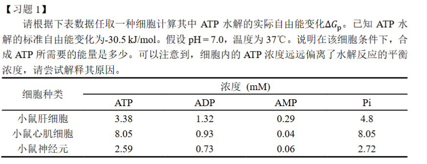
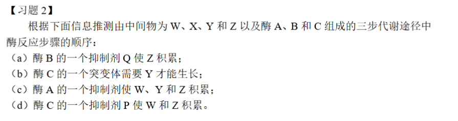

生物化学第一周作业
许呈睿 2023012946 探微化31

习题一
1)自由能计算：选择小鼠肝细胞进行计算
对反应：ATP + H₂O → ADP + Pi, ΔGp=ΔGΘ+RTlnQ
其中Q=[ATP][ADP][Pi]=3.381.32∗4.8∗0.001=1.876∗10−3M
带入数据计算可得，ΔGp=−30.5∗103+RTln1.876∗10−3=−46.7kJ/mol
2)在该细胞中，合成ATP所需要的能量是46.7kJ/mol
3)原因在于，细胞不能处于平衡态，ATP水解释放的自由能是驱动细胞内绝大多数耗能反应的动力。如果ATP水解反应达到了平衡状态，那么其自由能变化将等于0，意味着ATP无法再释放能量来做功，细胞的生命活动将停止。因此，细胞必须通过持续的能量输入，将ATP的浓度维持在远离平衡的高水平上

习题二
Z→enzymeBW→enzymeCY→enzymeAX
习题三
由题意，该总反应为FADH2+Q→electricFAD+QH2
依据Nerst方程，EΘ=−nFΔGΘ=0.04−(−0.22)=0.26V
带入数据可以解得ΔGΘ=−50.17kJ/mol
而有根据第一题的数据，ADP合成ATP所需的能量为 30.5kL/mol氧化放出能量更高， 显然能够驱动合成反应的进行
习题四：从化工热力学与动力学角度，如何理解“细胞区室化（compartmentalization）”是生物进化的进步还是 退化 ？
我认为细胞区室化是进化过程中一次明确无误的巨大进步，它能在非平衡条件下改善能量耗散利用、提高化学反应的选择性与速率并降低寄生/干扰，但同时存在能量与物质输运成本与失配风险。
一、热力学视角
- 区室化与非平衡耗散（能量耗散与有序结构）
- 生命与代谢系统处在开放的非平衡条件下；在外界能流驱动下，系统可以维持低熵（局部有序）结构，同时整体遵守第二定律（总体熵增）。非平衡热力学理论（Prigogine 等）表明，远离平衡的开放系统能够形成“耗散结构”（dissipative structures）。区室化是实现并维持这些耗散结构的一种物理手段：它允许在小尺度维持较强的梯度（浓度、电化学势、pH 等），从而更有效地耗散外部输入的能量并维持功能性有序。NobelPrize.org
- “耗散驱动适应”（Dissipation-driven adaptation）
- Jeremy England 提出的“耗散驱动适应”理论提出：在外场驱动下，系统倾向于演化出能更有效吸收并耗散功的结构。区室化可以被视为一种增加局部耦合性与耗散路径的结构，从而在能量流存在时被选择。换言之，从统计热力学上，区室化可提高系统把外部功转换为有序工作/代谢流的能力。england lab @ Bar-Ilan Physics
- 梯度与自由能利用
- 区室可以维持并隔离化学势差与电位差，使得跨膜/跨界面的能量转换（如呼吸链、光合作用、质子动力势生成）成为可能，并使得可用自由能被更高效地捕获用于驱动生物过程。没有区室、没有膜或隔离结构的话，梯度难以维持，许多耦合反应无法稳定进行。相关综述指出，代谢区室化是维持独特化学环境与保护反应中间体的重要方式。PMC
二、动力学视角
- 提高有效浓度与反应速率
- 化学反应速率往往与反应物的局部浓度成正比（如质量作用定律、米氏动力学等）。区室通过把催化剂/酶与其底物共定位或通过浓缩效应（crowding / condensation）显著提高有效浓度，从而提高反应速率与通量；这在细菌微区室（BMCs）与真核细胞的膜结合或相分离凝聚体中有大量实证。BioMed Central
- 阻止不利竞争与寄生（kinetic proofreading 与防寄生）
- 在早期自复制与代谢体系中，未被隔离的体系容易被“寄生序列”或旁路反应夺取底物资源。区室化能隔离遗传/催化体系，防止寄生者扩散和竞争，从而提高整体体系的复制/代谢持续性（protocell 实验与理论中有直接讨论与证明）。PubMed
- 控制反应路径、抑制副反应
- 在复杂代谢网中，某些反应互相冲突（例如需要不同 pH 或氧化还原环境）；区室允许并行进行不同化学环境下的反应而互不干扰，从动力学上避免产物损失与副反应降低总体效率。PMC
- 代价：运输阻碍与建设维护成本
- 区室带来的边界（膜或壳）同时带来物质与离子进出的阻抗：维持梯度需要耗能（主动运输、通道合成等）；此外合成膜/壳体自身需消耗资源与能量。因此从动力学角度看，若构建与维护成本超过其带来的速率/选择性收益，区室化就是“劣势”。这就形成了进化中的权衡（trade-off）。Frontiers
三、实证/文献证据（支持与反例）
支持区室化为“进步”的证据
- 原始囊泡/原始细胞（protocell）研究 ：实验表明，囊泡/膜体能够使核酸复制与膜生长整合、并在竞争实验中表现出优势（如 Mansy 等对 protocell 的综述、Budin 的实验）。这表明区室化有助于早期生命体系的稳定与选择。PubMed
- 细菌微区室（Bacterial microcompartments, BMCs） ：BMCs 可将多酶路径封装以提高催化效率并隔离有毒中间体，已被证明能赋予微生物特定代谢优势（Kerfeld 等综述与近期应用研究）。PubMed
- 膜无器官（membraneless organelles / LLPS） ：相分离驱动的凝聚体可快速可逆地富集底物与酶，调节动力学并在应激下保护生物分子，显示出区室化不必以固定膜为代价也能获得优势。PubMed
可能“退化”或劣势的例子 / 条件
- 能量受限环境 ：如果系统外部能量输入极低，维护区室（膜合成、主动运输）所需能量可能使有区室的策略在选择上落后于更简单的散开体系。相关理论与原始生命研究指出：区室化并非在所有条件下都必然被选择。MDPI
- 传质受限导致响应速度慢 ：某些生理情景需要快速全局响应（例如某些化学信号的瞬时扩散）；区室化可能降低系统整体响应速度，成为劣势。对此有动力学建模与实验模型的讨论。Nature
参考文献与来源（网络检索标识）
以下为引用的主要综述与研究
- Mansy SS, et al., Reconstructing the emergence of cellular life through protocell research (review) . PubMed 2009. PubMed
- Hondele M., et al., Membraneless organelles: phasing out of equilibrium (review). PubMed 2020. PubMed
- England JL., Dissipative adaptation in driven self-assembly , Nature Nanotechnology (perspective) 2015. england lab @ Bar-Ilan Physics**+1**
- Michaelian K., Non-Equilibrium Thermodynamic Foundations of the Origin of Life , MDPI 2022. MDPI
- Bar-Peled L., et al., Principles and functions of metabolic compartmentalization , 2022 (review). PMC
- Kerfeld CA., et al., Bacterial microcompartments (review), PubMed 2018. PubMed
- Doron L., et al., Bacterial microcompartments as a next-generation... (2024 review/applications). PMC
- Budin I., Physical effects underlying transition from primitive to protocell (PNAS 2011). 国家科学院院刊
- Mason AF., et al., Mimicking Cellular Compartmentalization in a Hierarchical Protocell (ACS Cent. Sci. 2019). PMC
- Floris E., et al., Physics of compartmentalization: How phase separation organizes the cell (review), 2021. PMC
- Ichihashi N., Positive roles of compartmentalization in internal reactions (2014 review). 科学直通车
- Prigogine I., Lectures and works on non-equilibrium thermodynamics (Nobel lecture / collected). NobelPrize.org